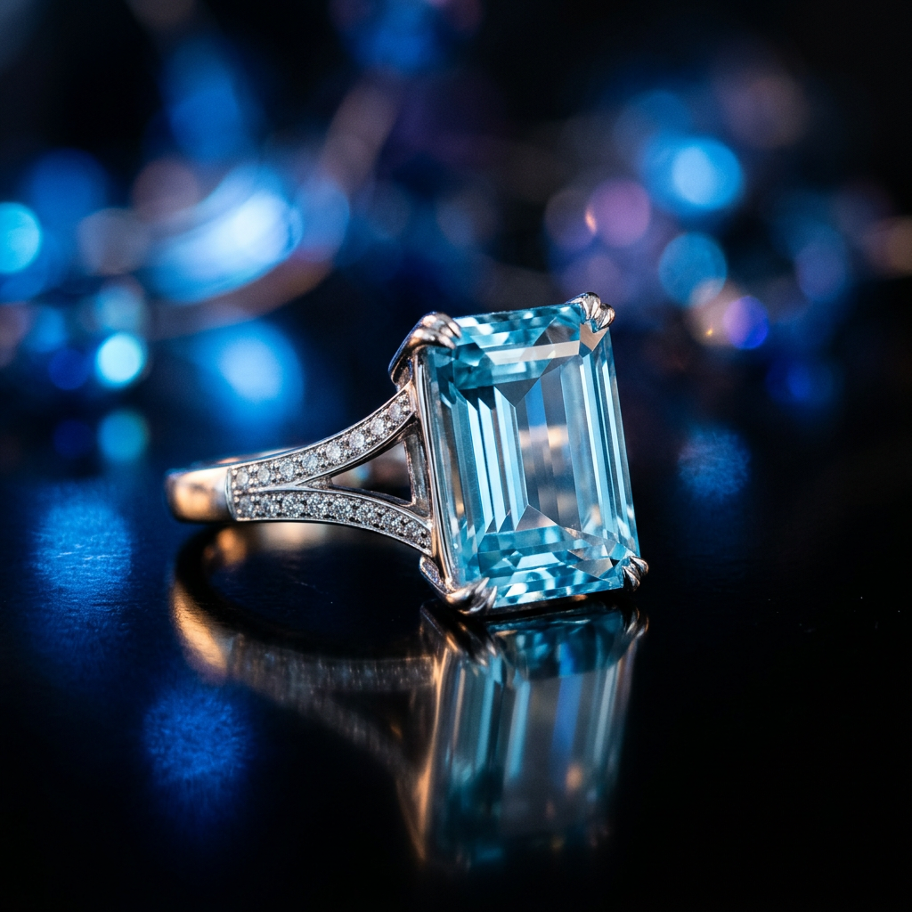
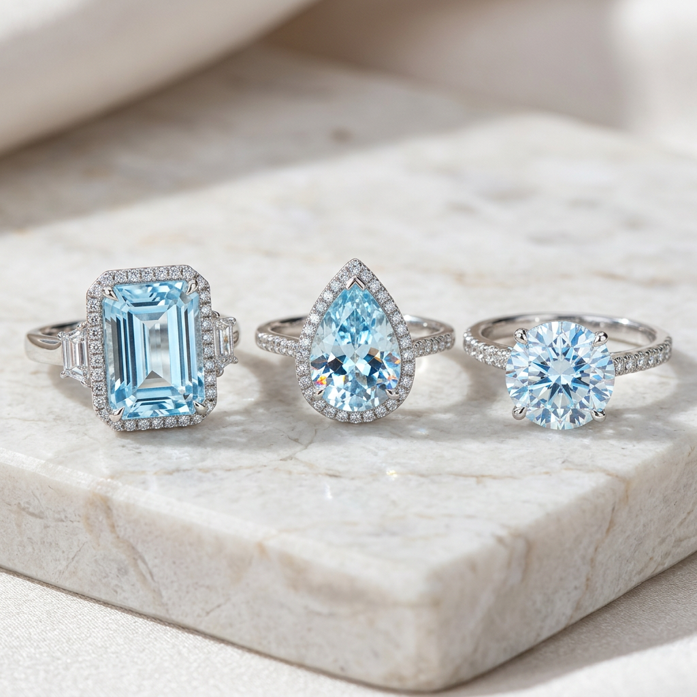

The Ultimate Buyer’s Guide to Aquamarine Ring Jewellery: How to Choose a Masterpiece
The Allure of the Sea: Why Aquamarine Ring Jewellery is a Timeless Investment
For centuries, the mesmerizing blue of the aquamarine has captivated the hearts of collectors and connoisseurs alike. Derived from the Latin words for 'water' and 'sea,' this gemstone isn't just a piece of jewellery; it is a statement of elegance and a symbol of serenity. However, for high-intent buyers, the challenge lies in navigating a market filled with varying grades, synthetic treatments, and misleading descriptions. If you are looking to acquire aquamarine ring jewellery that holds its value and radiates brilliance, you must look beyond the surface level.

Understanding the Value: The 4 Cs of Aquamarine Quality
Just like diamonds, the value of an aquamarine is determined by the four Cs. However, the weight of these factors shifts when dealing with colored gemstones. To ensure your investment is sound, you need to understand what makes a specific stone rare and desirable.
1. Color: The Depth of the Ocean
In the world of aquamarine ring jewellery, color is the most significant price driver. While most aquamarines are naturally a pale, pastel blue, the most sought-after specimens exhibit a deep, saturated 'Santa Maria' blue. When evaluating a ring, look for consistent color throughout the stone with no visible zoning. A vivid, medium-dark blue will always command a premium over lighter, washed-out tones.
2. Clarity: The Standard of Transparency
Aquamarine is a Type I gemstone, meaning it is typically 'eye-clean.' Unlike emeralds, which are often heavily included, a high-quality aquamarine should show no visible internal flaws to the naked eye. If you see clouds, feathers, or 'rain' inclusions, the value of the piece drops significantly. High-intent buyers should always insist on stones that offer exceptional transparency and light return.
3. Cut: Maximizing the 'Water' Effect
Because aquamarine is a pleochroic stone—meaning it shows different colors from different angles—the cut is vital. An expert lapidary will cut the stone to emphasize the deepest blue. Popular cuts for aquamarine ring jewellery include the emerald cut, which showcases the stone’s clarity, and the round brilliant or oval cuts, which maximize sparkle. Ensure the facets are symmetrical and the polish is mirror-like.
4. Carat Weight: Size Meets Sophistication
Unlike many other gemstones, large aquamarine crystals are found more frequently. This means the price per carat does not escalate as exponentially as it does with rubies or sapphires. However, for a ring intended for daily wear, a 2 to 5-carat stone provides the perfect balance of visual impact and practical durability.

Selecting the Right Metal for Your Aquamarine Ring
The metal you choose for your aquamarine ring jewellery will dramatically affect the stone's appearance. Because of its cool undertones, aquamarine is traditionally paired with white metals.
- Platinum & White Gold: These are the gold standard. The silver-white hue of these metals enhances the 'icy' nature of the blue stone, making it appear brighter and more vibrant.
- Rose Gold: For those seeking a modern or vintage-inspired look, rose gold provides a stunning contrast. The warmth of the copper-toned metal makes the blue of the aquamarine pop, creating a unique aesthetic.
- Yellow Gold: Traditionally used for a classic, regal appearance. Yellow gold works best with deeper blue aquamarines to prevent the stone from looking 'greenish' due to color reflection.
The Psychology of the Stone: More Than Just Beauty
High-intent buyers often seek aquamarine ring jewellery for its deep-rooted symbolism. Historically known as the 'Sailor’s Stone,' it was believed to protect travelers and ensure a safe return. Today, it represents clarity of thought, calm communication, and everlasting youth. Choosing an aquamarine ring is often a move toward a more sophisticated, understated luxury compared to the aggressive flash of diamonds.
How to Spot a High-Quality Investment Piece
When you are ready to make a purchase, keep these expert tips in mind to ensure you are getting authentic, high-value aquamarine ring jewellery:
- Check for Heat Treatment: Almost all aquamarines are heat-treated to remove yellow or green overtones. This is an industry-standard practice and does not devalue the stone, but it should always be disclosed.
- Verify the Origin: While Brazil is the primary source of high-quality aquamarine, stones from Madagascar and Pakistan are also highly prized.
- Examine the Setting: A high-quality stone deserves a high-quality setting. Ensure the prongs are secure and the craftsmanship of the band reflects the value of the gemstone.
Conclusion: Your Legacy in Blue
Investing in aquamarine ring jewellery is an exercise in discerning taste. By focusing on color saturation, eye-clean clarity, and a cut that honors the stone's natural pleochroism, you can acquire a piece that transcends fleeting fashion trends. Whether you are commemorating a milestone or building a curated collection, the aquamarine remains a pinnacle of gemstone elegance.